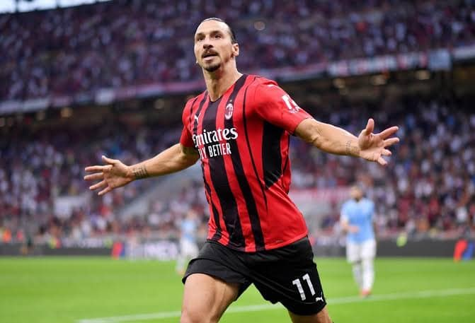

Grande clássico na noite de hoje
Uma noite estrelada, um clássico atemporal. Entre risos e suspiros, o tempo parece congelar. Sob o manto escuro do céu, histórias ganham vida, melodias ecoam e memórias são tecidas. Na noite de hoje, celebramos a magia que nos envolve, eternizando momentos.
Ler mais

Noite do Superbowl
A noite do Super Bowl envolve emoções intensas, rivalidades eletrizantes e espetáculos inesquecíveis. Milhões de olhares fixos na tela, corações acelerados, enquanto o esporte se funde com entretenimento. É mais que um jogo; é uma celebração da paixão, competição e camaradagem.
Ler mais

Notícia sobre a NBA
Nesta temporada da NBA, os Lakers recuperam sua forma enquanto os Nets buscam sua força. Curry brilha com sua mira precisa e os novatos mostram promessa. O suspense aumenta com cada jogo, prometendo uma corrida emocionante para os playoffs. A NBA continua a cativar fãs em todo o mundo.
Ler mais

O Adeus de um Gigante
A aposentadoria de Ibrahimovic do futebol marca o fim de uma era gloriosa. Com sua habilidade inigualável e presença carismática, ele deixou uma marca indelével no esporte. Seus gols incríveis e personalidade única serão lembrados para sempre pelos fãs em todo o mundo. #LegadoIbra
Ler mais